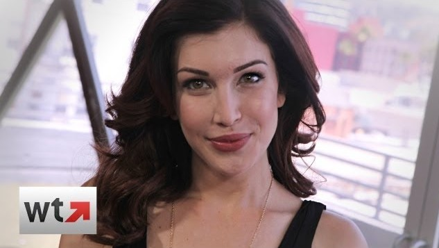

The wonderful & beautiful actress
Stevie Kathleen Ryan
ٍShe born in June 2 of 1984, was an American YouTube personality, actress and comedian. She was known for her YouTube videos and starring in the VH1 series Stevie TV.
Ryan was born June 2, 1984, in Riverside, California. At the age of two, Ryan and her family relocated to Victorville, where her parents operated a trucking business. In 2002, she graduated from Silverado High School.
At the age of 19, Ryan made the move to Los Angeles to pursue a career in the entertainment industry. Throughout 2006 and 2007, Ryan booked various commercial projects while also filming, editing, and acting in videos which she posted online.
Ryan collaborated with New Wave Entertainment in 2010 on the sketch comedy show Stevie TV, which parodied famous pop culture personalities and phenomena. The show was picked up by VH1.Stevie TV was cancelled after the second season.
Ryan was found dead in her home due to an apparent suicide by hanging on July 1, 2017, at the age of 33.,
Good Bye Stevie Ryan
Her twitter account